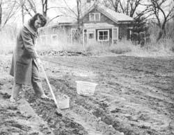
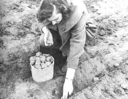
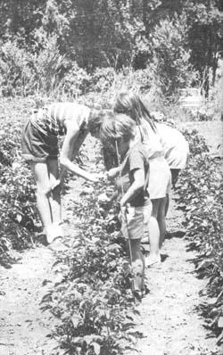
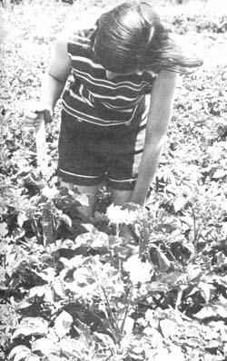
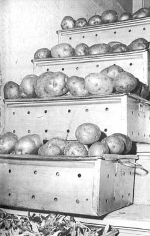

Potatoes On A Borrowed Lot
Jack Roland Coggins
March/April 1972
For many years, nothing but weeds grew on a vacant lot near our home, so we finally called the owner of the property and asked permission to garden there in return for our care of the land. It wasn't as hard to persuade him as we had thought it might be, which left us with the problem of deciding what to plant.
We soon settled on a good food crop that would give our family of six a maximum return on a minimum investment of time, money and energy, and that free land now provides us with big, creamy, delicious potatoes which-properly stored-last almost year-round.
Here's how we did it:
GETTING THE LAND
The free use of land is readily available for natural gardening in and around almost every village, town and city in this country. All you have to do is ask. Property owners are usually quite pleased to find someone willing to relieve them of the costly burden of controlling weeds on their vacant lots and many appreciate the contribution that organic culture can make to the soil. Once you point out that your activities will be building, not depleting or polluting, the land and actually increasing the lot's value, you're usually home free.
I now garden on several "borrowed" lots and I never enter into a formal agreement for the privilege. I find it sufficient to simply check with the property owners each spring before I plant. At season's end, I inform my "landlords" that I'm through with the plot for the year but that I'm interested in using it again the following spring. Once you've shown the property owners that you really do care for a lot, you're almost automatically assured free use of that piece of land year after year.
Do not agree to "sharecrop" or share a portion of the produce. It's not necessary and only sets the stage for potential squabbles later when the harvest is divided. It is a good idea, however, to take small amounts of fresh produce to the land owner periodically as it ripens. Explain that the vegetables taste better and are more healthful to eat because they were grown on the lot without the use of chemical fertilizers or insecticides. This is only sensible public relations and helps promote the concept of natural gardening.
PREPARING THE GROUND
Knowing that weeds would be the big problem that first spring in our new potato patch, we spaced the rows about four feet apart (slightly farther apart than normal) to make light cultivation with a tiller easy and fast. Whenever weed seeds germinated, we let them grow about an inch tall and then tilled them under (long before they produced seeds). This provided "green manure" which built the soil and left the garden plot virtually weed free after that initial season.
We tilled the lot quite deep-12 to 14 inches-after harvesting our potato crop that fall. This in-depth churning of the soil dug up some of the subsurface minerals in the earth (which, it is claimed, help make healthier plants) and thoroughly mixed them with the organic debris of our green manure. The following spring, this autumn-tilled soil was ready for planting three to four weeks earlier than nearby spring-tilled gardens, an important aspect, we learned, in growing the finest potatoes with minimal effort.
PLANT QUALITY, GET QUALITY
J. B. Sieczka, extension specialist at Cornell University, Ithaca, New York has many good ideas about buying and handling potatoes for planting and, for the most part, we follow his suggestions. It is very important, for instance, to purchase seed potatoes grown specifically for that purpose. Spuds taken from supermarket produce counters just won't give the same good results.
We buy our seed potatoes very early in the spring so that we're sure to get the freshest stock. This seed stock is then stored until planting time in a non-heated room at approximately 40° F. Then, when we're ready to plant, we allow the room temperature to rise to between 50 and 60 degrees, the best handling temperature, according to Sieczka.
Three days to a week before actual planting, we separate the potatoes into two piles. One heap contains the tubers (those weighing about two ounces each) which we will plant whole, and the second stack is made up of the larger potatoes which must be cut into planting size pieces of, again, about two ounces each. (Whole potatoes weighing more than two ounces tend to produce too many plants per hill for maximum yield, and cut pieces smaller than that size are often not sufficiently vigorous.) The cut sections are placed in well-ventilated plastic clothes baskets until their wet surfaces are dry to the touch. Ideally, each of these pieces should have two or three short sprouts prior to planting.
PLANT EARLY
Potatoes do best during very cool spring weather and they require a consistent and generous supply of moisture. Here in southeastern Nebraska, our best and least worrisome crop comes from plantings made in the middle of March, but we often do plant until mid-April. The actual planting date in any one year, of course, depends on seasonal weather and soil conditions, but the main idea is to get those seed potatoes into the ground early enough to take advantage of all or most of the early spring moisture. Try to have your main crop mature before the hot, dry, buggy days of midsummer.
Don't plant too shallow. We like to bury our seed potatoes about six inches deep to put their roots down where the moisture is and to keep 'em cool when the days begin to warm.
Crowding can be another problem. It increases moisture requirements and promotes insect infestation so don't set your hills too close together in the rows. A spacing of 18 inches is better than 12, and those rows should ordinarily be at least 30 inches apart.
Expanding spuds like loose earth and, with a distance of 30 inches between rows, you should have enough room to walk down the center of the space when cultivating without packing the soil around the plants.
We mulch most of our garden crops with organic debris to conserve moisture and reduce ground cracking. The foliage of our very early potatoes, however, spreads until it meets between the rows and shades the ground in the middle. In other words, the plants are self-mulching. Later potatoes are not so luxuriant so we cover the ground around them with grass cuttings, dead leaves and corn stalks.
MAINTENANCE
Fertilizer? Our approach is controversial. We don't use it. We just keep tilling under organic debris and kitchen garbage. Our crops get better each year, so the soil must be improving. Of course, the borrowed lot was organically rich to begin with, so we had a headstart!
Insecticides? We don't use them either. The children pick off what potato bugs we have and squash them on the ground. It's primitive, to be sure, but one of the major benefits of growing your own is the knowledge that there isn't even the risk of chemical contamination (unless the yo-yo across the fence,the power company or somegovernment agency decides tofog the area - Ed.).
THE HARVEST
Dig your home-grown tubers as soon as the foliage dies on the potato plants. The one year we made the mistake of leaving ours in the ground through late summer, bugs and rot and sun scald robbed us of about a third of the harvest.
CURING
Prepare your potatoes for storage by taking them to a shady, airy place and spreading them in single layers on canvas or newspapers to cure for a day or two. Bring the potatoes inside or cover them in case of rain.
STORAGE
Although many people seem to have trouble keeping garden-grown potatoes through the winter, the principles are quite simple: You must control the temperature, the humidity and the air circulation (ventilation) of your storage area.
Commercial potato processors like to hold their tubers at 45° F and 95% humidity with an air circulation capacity of 10 cubic feet per minute per ton of produce. This is virtually impossible to duplicate in home storage but, luckily, potatoes will keep quite well under conditions nowhere near this ideal. Well-ventilated cellars, pits, unheated basements and spare rooms are generally satisfactory for the winter storage of potatoes if the tubers are placed close to the floor where the coolest air and best circulation are usually found.
Our basement is heated, so we keep the potatoes we raise on the landing and stairs leading down into it. We place a small lug of potatoes on half of each step (leaving the other half to walk on) and draw a large canvas tarp across the entrance at the base of the stairs to prevent the heated basement air from reaching the spuds. Stored in this manner, our potatoes retain their creamy garden-fresh flavor for months. It's really something to eat them at Thanksgiving and Christmas, knowing they're chemical free as well as (practically) cash free!
|
 We don't own this once weed-filled lot, but the owner is happy to let us use it without charge because growing potatoes the organic way both keeps the weeds under control and helps build the fertility of the property's soil. The idea saves us many food dollars, too! |
 We get best results by planting certified, disease-free potatoes, grown specifically for seed, not the kitchen. Potato pieces weigh about two ounces and each has two or three sprouts prior to planting. Wait a day or two, until cut surfaces are dry to the touch, before planting. |
 Potatoes planted in wide rows are easier to cultivate and produce a noticeably better harvest for two reasons: (1) crowding plants increases their moisture requirements and makes the potatoes more susceptible to insect attacks and (2) developing potatoes do best in loose soil and wider rows leave enough space for you to hoe around the plants without packing the earth between them as you walk down the rows. Loose soil also helps prevent dry weather cracks in the garden, thereby assisting in the control of' the potato tuber moth which lays eggs in such ground cracks. Our children pick off and squash the few potato bugs we find on our healthy plants. |
|
 The potatoes we plant March 15, here in southeastern Nebraska, stand 30 inches tall at flowering time with foliage that spreads to produce a shade-mulch which conserves moisture during dry spells. Rows in this photo are 30 inches apart and plants are spaced 18 inches between in the rows. We begin harvesting good new potatoes-12 or more per hill-from plantings like this by early June. Rain provides the only moisture. We prepare the ground by tilling under corn stalks and leaves, the preceding autumn. Since we've found that we can "borrow" the ground for such a potato patch and pick up mulching material for the asking, our potatoes cost us very little indeed! |
 Our earliest-planted potatoes grow such vigorous vines that - by midsummer-the patch looks like a jungle as the foliage spreads to meet between the rows. We know, however, that this natural shade-mulch conserves moisture, cools the earth and prevents drying and cracking. Later plantings do not grow quite so luxuriantly and we cover the ground around them with grass cuttings, leaves and corn stalks. Both early and late plantings mature with only the moisture from spring rains, we use no irrigation. Nor do we use fertilizer or pesticides. We just till under organic matter and "hand-pick" the few potato bugs we find. Primitive methods, but first-rate potatoes! |
 Do not store potatoes over winter in heated basements. Instead, use the landing and steps leading down. To exclude heated basement air, shut the door at the bottom of the stairs or, if there is no door, hang a tarp or rig up a similar arrangement. We store 20 to 40 pounds of produce in lug boxes and ventilated pans on each tread of our basement stairs and still find ample walking room beside the produce. The landing provides space for another couple hundred pounds of vegetables. We haven't needed it yet, but if we ever do, we'll build shelving along the stairwell wall for even more storage space. We really enjoy potatoes, like the ones shown here, at Christmas time! |